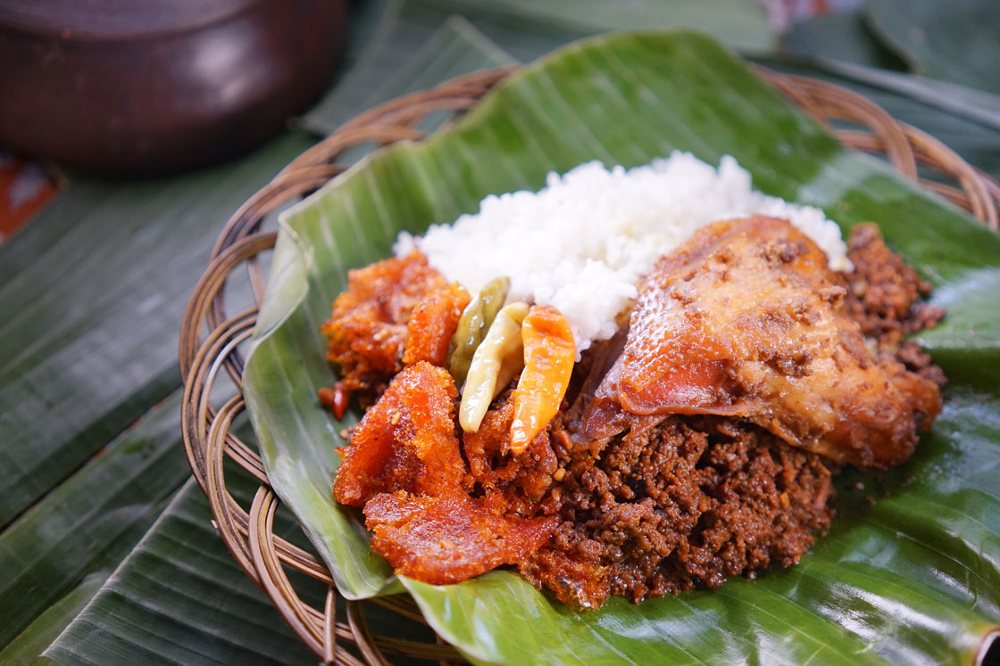

Bagaimana cara membuat gudeg

Dalam resep gudeg asli Jogja, ada beberapa bahan yang perlu disiapkan, antara lain:
- 1 kg buah nangka muda, potong kecil
- 1½ liter santan kelapa kental
- 5 butir telur, rebus hingga matang
- 1 liter air buah kelapa murni
- 100 gram gula merah, sisir halus
- 3 lembar daun salam
- 5 cm lengkuas utuh
- Daun jati secukupnya untuk alas serta campuran ketika merebus (boleh di-skip bila memang tidak ada)
Selain beberapa bahan di atas, Anda juga perlu menyiapkan beberapa bahan bumbu yang dihaluskan, seperti:
- 10 butir bawang merah
- 6 siung bawang putih
- 1 sendok teh ketumbar butir
- 1 sendok makan garam
- 5 butir kemiri
- 2 cm jahe
Setelah berbagai bahan serta bumbu disiapkan, maka selanjutnya Anda bisa mempelajari tentang bagaimana cara membuat gudeg asli Jogja yang lezat dan istimewa.
- Langkah pertama yang perlu dilakukan adalah Anda rebus terlebih dahulu buah nangka muda yang telah dipotong kecil bersama dengan bumbu-bum yang telah dihaluskan, tunggu hingga nangka muda menjadi sedikit layu dan empuk.
- Selanjutkan, Anda bisa menyiapkan panci ataupun kendil yang digunakan untuk mengolah masakan gudeg. Bila Anda memiliki daun jati, Anda bisa melapisi bagian dasar panci atau kendil dengan daun jati tersebut sebagai alas baru kemudian masukkan nangka muda yang telah direbus bersama bumbu.
- Tambahkan air kelapa murni dan daun salam. Pastikan seluruh permukaan nangka muda bisa terendam, lalu tutup panci dengan rapat.
- Masak sekitar 3 jam hingga warna nangka muda yang sebelumnya berwarna layu dan pucat menjadi sedikit kecoklatan.
- Setelah proses pemasakan selama kurang lebih 3 jam, Anda bisa membuka tutup panci dan masukkan telur rebus yang telah dikupas kulitnya serta air santan kental. Usahakan semua bahan terendam.
- Anda juga perlu menambahkan gula merah yang disisir halus serta lengkuas di atasnya, aduk-aduk sebentar baru kemudian tutup kembali dan masak selama 3 jam.
- Hidangan masakan gudeg pun telah matang dan warnanya berubah menjadi kecoklatan. Angkat dan siap untuk disajikan.
Ternyata tak terlalu sulit bukan cara membuat gudeg asli Jogja di rumah? Anda bisa menyajikan masakan khas Jogja tersebut bersama dengan nasi putih hangat, sambal krecek, bumbu kacang, dan lainnya sehingga gudeg pun semakin lezat saat dinikmati. Selamat mencoba!
Resep by https://foodizz.id/blog/resep-gudeg-asli-jogja-yang-enak-dan-istimewa/